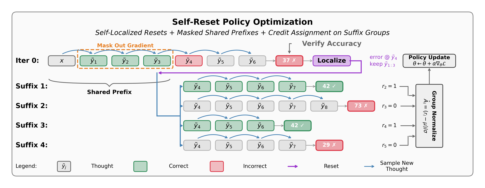
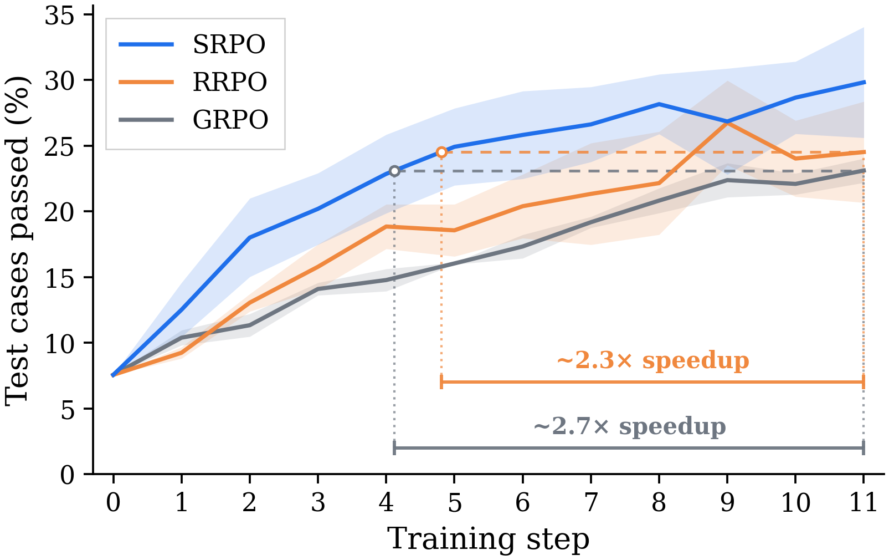
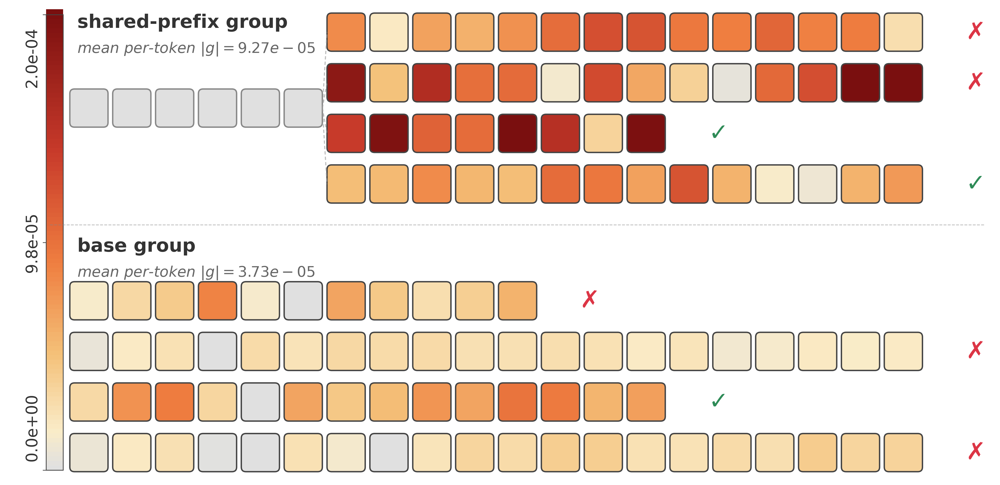
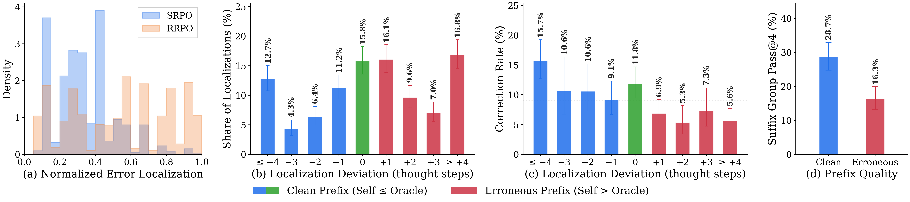
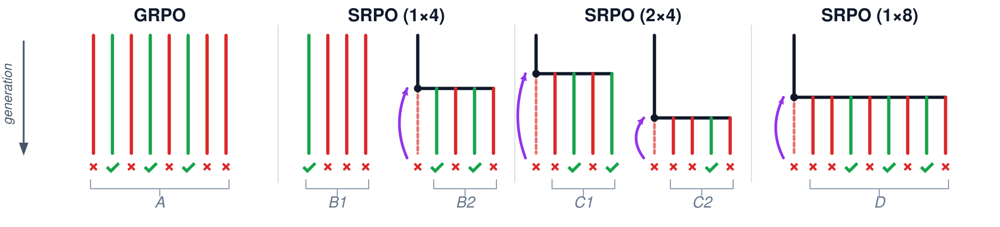

A Thought MDP
Each action is a complete reasoning step.
The model determines semantically coherent thought boundaries during generation, making every prefix a valid on-policy reset state.
Self-localize · Reset · Resample · Learn
SRPO finds the first error in a failed reasoning trace, resets to the clean prefix before it, and learns from several counterfactual continuations.
Re-enter the improvable state and compare what happens next.
Resetting to an improvable state concentrates learning where a better action exists. The companion theory page derives why targeted resets improve sample complexity and per-iteration progress over random resets.
Explore credit assignment with resets01 / The method
After a failed rollout, the same policy identifies its first erroneous thought. SRPO keeps the clean prefix, samples new suffixes from that shared state, and optimizes their relative outcomes.
Generate an initial thought-by-thought solution.
Find the first erroneous reasoning step.
Return to the clean prefix before that error.
Compare suffixes and update only what follows.

The model determines semantically coherent thought boundaries during generation, making every prefix a valid on-policy reset state.
Rewards are normalized within each suffix group, and copied prefix tokens receive no gradient.
02 / Results
On LiveCodeBench v6 medium with OLMo-3-7B, SRPO reaches matching pass rates 2–3× faster than GRPO and random resets.

Prefix masking removes the learning signal from shared history and focuses credit on the suffix where sampled decisions differ.

TreeRL uses two initial completions, one entropy-selected branch point per completion, and three continuations from each point—the same eight-terminal-rollout budget. Results are three-seed averages over ten benchmarks.
Corrections succeed far more often from a clean prefix. SRPO concentrates resets near the first error, where a new continuation can still recover the answer.

03 / Sampling design
SRPO splits eight rollouts into a fresh base group and a reset group. Reset suffixes share the same history, making their outcome differences informative about decisions after the chosen state.

The takeaway
Find the state where improvement is possible. Resample what follows. Assign credit where decisions change.Train with SRPO
04 / Citation
If SRPO is useful in your research, please cite the paper.
@misc{samanta2026credit,
title = {Credit Assignment with Resets in Language Model Reasoning},
author = {Ankur Samanta and Akshayaa Magesh and Ayush Jain and
Youliang Yu and Daniel Jiang and Kavosh Asadi and
Kaveh Hassani and Paul Sajda and Jalaj Bhandari and
Yonathan Efroni},
year = {2026},
eprint = {2605.25507},
archivePrefix = {arXiv},
primaryClass = {cs.LG}
}